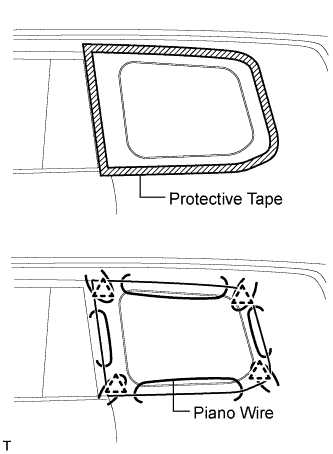
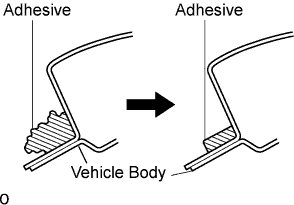

QUARTER WINDOW GLASS > REMOVAL |
| 1. REMOVE ROOF HEADLINING ASSEMBLY (w/o Sliding Roof) |
Remove the roof headlining (Click here).
| 2. REMOVE ROOF HEADLINING ASSEMBLY (w/ Sliding Roof) |
Remove the roof headlining (Click here).
| 3. REMOVE QUARTER WINDOW ASSEMBLY |
 |
Disconnect the connectors.
From the interior, insert a piano wire between the vehicle body and the quarter window glass as shown in the illustration.
Tie objects that can serve as handles (for example, wooden blocks) to both wire ends.
Cut through the adhesive by pulling the piano wire around the quarter window glass.
Using suction cups, remove the quarter window glass.
| 4. CLEAN VEHICLE BODY |
 |
Clean and shape the contact surface of the vehicle body.
On the contact surface of the vehicle body, use a knife to cut away excess adhesive as shown in the illustration.
Clean the contact surface of the vehicle body with cleaner.